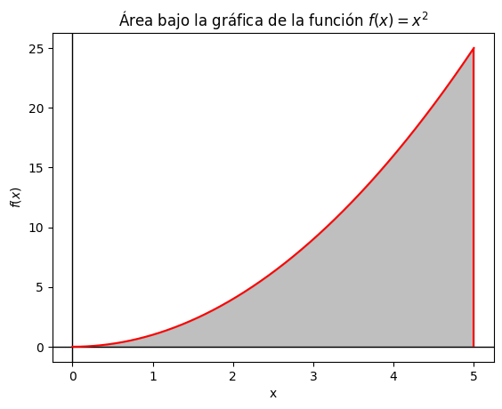
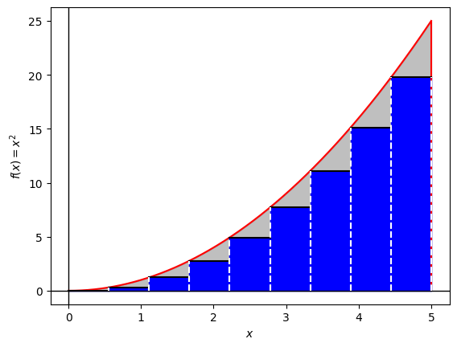
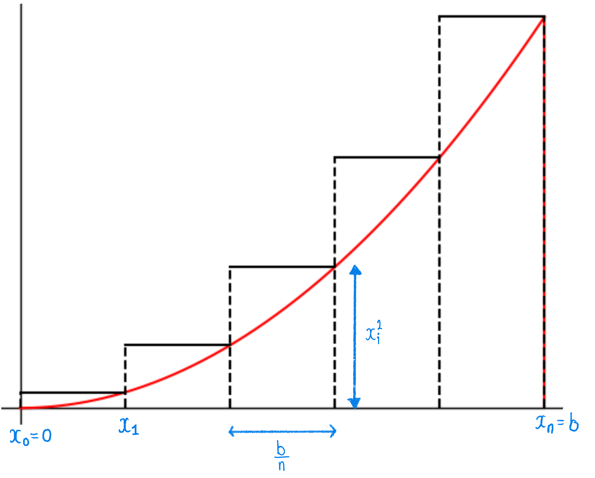
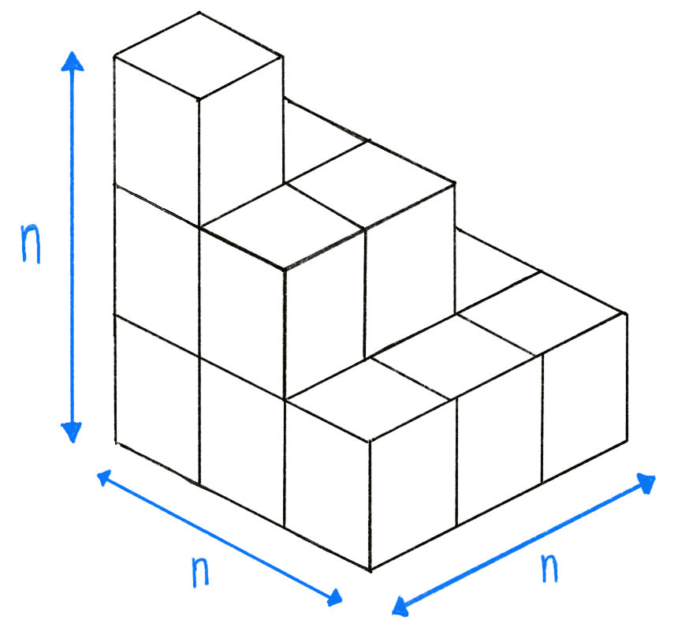

Una de las motivaciones más importantes para el desarrollo
del Cálculo Integral es el concepto de área. En
particular, calcular el área entre la gráfica de una función y
el eje $x$ en un intervalo determinado.
.
La noción de área no la vamos a definir formalmente pues aunque se trata de un proceso interesante
es extenso. Pensemos en el área simplemente como una función denotada por $A$
que asigna números no negativos a ciertas regiones del plano, las cuales llamaremos
medibles y que satisface las siguientes propiedades para $R$ y $T$
medibles:
$A(R) \geq 0$ para todo medible $R$,
$A(\emptyset)=0$,
Si $R\cap T =\emptyset$, entonces
$A(R\cup T) = A(R)+ A(T),$
Si $R \subseteq T$, entonces $A(T) \leq A(R)$,
Si $R$ es un rectángulo de base $b$ y altura $h$, entonces $A(R)=b\cdot h$;
Se dice que dos conjuntos medibles $R$ y $T$, son congruentes
si existen rotaciones y/o traslaciones que lleven uno al otro.
Bajo esta definición si $R$ y $T$ son congruentes entonces se debe cumplir que $A(R)=A(T)$,
Existe una propiedad adicional que tiene que ver con límites (pero que
no es fundamental entender en este momento):
Si $R_1,R_2, R_3, \ldots$ es una sucesión de conjuntos medibles ajenos dos
a dos, entonces
$$
A\left(\displaystyle{\bigcup_{i=1}^\infty R_i}\right)=\displaystyle{\sum_{i=1}^\infty A(R_i)}
$$
Área como límites de sumas
Arquímides entre otros muchos temas, estaba interesado en calcular áreas y volumenes.
Antes de cálcular áreas, Arquimides ya hábia calculado varios volúmenes:
El volumen del cono de base rectangular tiene volumen: $\displaystyle{\frac{1}{3}B\cdot h}$,
donde $B$ es el área de la base y $h$ la altura,
El volumen de la esfera de radio $R$ tiene volumen $\displaystyle{\frac{4}{3}\pi R^3}$
La idea más importante de Arquímides fue descomponer la región (ya sea
en el plano o en el espacio) en regiones más sencillas cuya área o volumen sea conocido o
fácil de calcular.
Veamos un ejemplo siguiendo las ideas de Arquímides: Calcular el area comprendida
entre la gráfica de la función $f(x)=x^{2}$ y el eje $x$ desde $x=0$ hasta $x=b$, donde $b>0$
es un número arbitrario pero fijo.

Cálcular directamente el área bajo la parábola no es sencillo pero podemos
aproximarla si dividimos la región en franjas y consideramos rectángulos que
aproximen el área de dichas franjas. La ventaja de los rectángulos es que su área
es simplemente base por altura.
Intuitivamente si dividimos la región en un número muy grande de franjas la aproximación
del área de los rectángulos será cada vez una mejor estimación del área bajo
la parábola y en el límite obtendremos precisamente el área buscada. En lo que
sigue hacemos las cuentas que formalizan esta idea.

Sea $n\in \mathbb{N}$, comencemos dividiendo el invervalo $[0,b]$ en $n$
subintervalos de igual longitud:
Por ejemplo, si $n=2$ entonces el intervalo $[a,b]$ es dividido en dos subintervalos iguales
y se etiquetan a los extremos de estos subintervalos como:
$$x_0:=0,\displaystyle{x_1:=\frac{b}{2}},x_2:=2b.$$
En el caso general, se divide el intervalo $[0,b]$ en $n$ subintervalos de igual longitud y
los extremos de estos subintervalos se etiquetan como:
Luego, para cada $i=1,2,\ldots,n$ calculemos el área de cada rectángulo cuya base
está en el intervalo \([x_{i-1},x_i]\). En este punto necesitamos tomar una decisión
de cómo tomar la altura de cada rectángulo, pues podemos aproximar el
área con rectángulos por debajo de la gráfica o por arriba.
Utilicemos en este momento los rectángulos por arriba. En esta situación tenemos
la siguiente figura

Sumando las contribuciones de área de cada uno de los rectángulos obtenemos:
$$
\sum_{i=1}^{n} \frac{b^3}{n^3}i^2=\frac{b^3}{n^3}\sum_{i=1}^ni^2.
$$
lo cual es una aproximación al área entre la gráfica de la parábola y el eje $x$ en el intervalo $[0,b]$.
En este punto el mayor problema es estimar la expresión anterior cuando $n$ tiende a infinito.
Afortunadamente Arquímides pudo reconocer la suma anterior como un volumen.
Observemos que la suma $\displaystyle{\sum_{i=1}^n i^2}$ es una estimación
del volúmen de la pirámide rectangular de base $n$ y altura $n$. Lo anterior
se puede apreciar en la siguiente figura, que acomoda cubos de lado $1$ en forma de
una pirámide.

Colocando a los cubos unitarios de esa manera cada capa tiene un volumen de $i^2$, empezando con la
base en $i=n$ y terminando con la cúspide en $i=1$. El volumen de dicho cono es
$\displaystyle{\frac{1}{3}n^2 n}$. Por lo que si $n$ es muy grande la suma
$\displaystyle{\sum_{n=1}^n i^2}$ es aproximadamente $\displaystyle{\frac{1}{3}n^3}$.
Por lo tanto
\[
\frac{b^3}{n^3}\sum_{i=1}^n i^2 \approx \frac{b^3}{n^3} \left(\frac{1}{3} n^3\right)
=\frac{b^3}{3}.
\]
Por lo tanto Arquímides dedujo que el área bajo la parábola, de $x=0$
a $x=b$, es $\frac{b^3}{3}$.
Este ejemplo es muy ilustrativo, queda entonces refinar las ideas y cuentas que se han hecho.
Partición de un intervalo
Sea $[a,b]\subseteq \mathbb{R}$ un intervalo. Una partición de $[a,b]$ es un subconjunto finito de puntos
$P:=\{ x_0, x_1, \ldots, x_{n-1},x_{n} \}\subseteq [a,b]$ tal que:
$$x_{0} = a < x_{1} < x_{2} < \cdots < x_{n-1} < x_{n} = b.$$ El número $n$
es llamado la longitud de la partición y determina en cuántas partes dicha partición
divide el intervalo $[a,b]$. Los intervalos $[x_{i-1}, x_i]$ para cada
$i=1,\dots, n$, se denominan subintervalos de la partición. Observemos que la
partición más sencilla del intervalo $[a,b]$ es simplemente $P:=\{x_{0} = a,x_{1}=b\}$ y
tiene longitud $1$.
Partición homogenea
Sea $[a,b]$ un intervalo. Una partición $P:=\{ x_0, x_1, \ldots, x_n \}$ de longitud $n$ de $[a,b]$
es homogenea si todos los subintervalos, $[x_{i-1}, x_i]$, tienen la misma longitud. Es decir,
si para cada $i=1,2,\ldots, n$ se tiene que $x_{i} - x_{i-1} = \displaystyle{\frac{b-a}{n}}$.
Observación
Si $P:=\{ x_0, x_1, \ldots, x_n \}$ es la partición homogenea
del intervalo $[a,b]$ de longitud $n$ entonces $[a,b]$ se divide en
$n$ subintervalos de la misma longitud. Más aún, los puntos de
la partición homogenea están dados por:
\begin{eqnarray*}
x_0&=&a, \\
x_1&=&a+\frac{b-a}{n},\\
x_2&=&x_1+\frac{b-a}{n}=a+2\left(\frac{b-a}{n}\right),\\
\vdots \\
x_{j+1}&=&x_{j}+\frac{b-a}{n}=a+j\left(\frac{b-a}{n}\right),\\
\vdots \\
x_n&=&a+n \left(\frac{b-a}{n}\right)=a+b-a=b.
\end{eqnarray*}
Suma inferior y superior de Riemann
Sea $f:[a,b]\to \mathbb{R}$ una función acotada y $P:=\{ x_0, x_1,x_{2}, \ldots, x_n \}$
una partición de $[a,b]$. Para cada $i=1,\ldots,n$ sean $m_i:=\inf \{ f(x): x\in (x_{i-1}, x_i) \}$
y $M_i :=\sup \{f(x) : x\in (x_{i-1}, x_i)\}$.
La suma inferior de Riemann de $f$, con respecto a la partición $P$ se denota por $\underline{S}(f,P)$
y define como:
$$\underline{S}(f,P) :=\sum_{i=1}^n m_i \cdot (x_i-x_{i-1})$$
La suma superior de Riemann de $f$, con respecto a la partición $P$ se denota por $\overline{S}(f,P)$
y se define como:
$$\overline{S}(f,P) :=\sum_{i=1}^n M_i \cdot(x_i-x_{i-1})$$
Si $P$ es la partición homogenea de $[a,b]$ de longitud $n$ se denotan
$\overline{S}(f,P)$ y $\underline{S}(f,P)$ como ${\underline{S}\,}_n(f)$ y $\overline{S}_n(f)$
respectivamente.
Observación
En la definición anterior los valores $m_{i}$ y $M_{i}$ existen para cada
$i=1,\ldots,n$ porque $f$ es una función acotada en $[a,b]$.
Ejercicio
Sean \(f:[0,b]\to \mathbb{R}\) la función definida por $f(x):=x^2$ y
$P_{n}:=\{ x_0, x_1,x_{2}, \ldots, x_n \}$ la partición homogenea de $[0,b]$ de longitud $n$.
Prueba que $$\lim_{n\to \infty} \overline{S}(f,P_n)=
\lim_{n\to \infty} \underline{S}(f,P_n)=\frac{b^3}{3}
$$